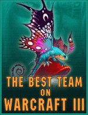

Это реконструированный сайт topw3.narod.ru | Харьков 2005-2007
Best team of warcraft III

Турнира best team of warcraft III клан ТоР ждал давно. Ждал как одного из наиболее значимых шансов проявить себя в играх с элитой украинского варкрафта. И вот, турнир состоялся. Оговорюсь сразу для ТоР-а он прошел весьма неудачно. Однако не все так однозначно, а посему давайте попробуем разобраться, в прошлом настоящем и будущем клана team of professionals...
ЧТО БЫЛО...
После окончания крайне удачного для себя 2006 г. игроки ТоР-а начинают испытывать объективные трудности связнные с реальной жизнью и к кибеспорту не относящиеся. Анонс столь долгожданного турнира появляется примерно за месяц до его проведения после чего ТоР-ы начинают лихорадочные поиски игрока, который мог бы разбавить лайн-ап и сбалансировать состав. А ведь вся проблема заключалась в том, что после окончания Ганнибалом карьеры игрока и отказа Рекса ехать на чемпионат по объективным причинам, в составе оставалось всего 3 человека. Кроме того некоторое время участие команды в турнире находилось под большим вопросом в связи с заявленной системой проведения (на тот момент single elimination). Тем не менее вопрос с составом был худо-бедно решен за две недели до турнира и клан наконец-то смог приступить к полноценным тренировкам. Касательно итоговой заявки: в нее не попал Запорожец- Минос, невыездной Рекс и принятый в состав буквально за три недели и так же скоропостижно выгнаный Декстер. В итоге помимо трех постоянный игроков в заявку попали молодой и нестабильный хум Тема и перспективный андед- Adoveov.
Чем ближе приближалась дата турнира, тем более ясным становилось то, что показаь хороший результат не удастся. Двух недель тернировок средней интенсивности оказалось слишком мало, чтобы вернуть игрокам оптимальную форму. В условиях результата последнего тура местной лиги (нестабильная игра Чери и Диабло, последнего в особенности) перспективы клана на турнире становились все более мрачными) Ситуация дополнительно осложнялась тем, что на турнир зарегистрировались только лучшие команды Украины (всего 6 команд):
 nGt-INGO[ua]:
nGt-INGO[ua]: Sonik,
Sonik, Terran,
Terran, Death,Fav,All1gator,FastClick,Nawt,Poval(менеджер),Hunter(менеджер)Crimea ProTeam:C14.Maloy,
Death,Fav,All1gator,FastClick,Nawt,Poval(менеджер),Hunter(менеджер)Crimea ProTeam:C14.Maloy, C18.Dred,C20.Ghost,C23.Shock,C2.Grunt (менеджер)KerchNET:Moonman,Majestic,Myrik,Bly,Snake,Red(менеджер),Matrix(менеджер)C-сlub:srs.Valentin,pod.THR,Monster,Venus,Vegas(менеджер)ToP:Exe,Diablo,Tema,Cherya,Adoveov,Gannibal(менеджер)FuDeS:Izual,FoDDeR,Tresh,Tayfun
C18.Dred,C20.Ghost,C23.Shock,C2.Grunt (менеджер)KerchNET:Moonman,Majestic,Myrik,Bly,Snake,Red(менеджер),Matrix(менеджер)C-сlub:srs.Valentin,pod.THR,Monster,Venus,Vegas(менеджер)ToP:Exe,Diablo,Tema,Cherya,Adoveov,Gannibal(менеджер)FuDeS:Izual,FoDDeR,Tresh,TayfunСоставы прямо скажем впечатляющие. Если не считать незарегистрировавшуюся по непонятным причинам команду VC, то на турнире присутствовали все игроки из топ-20 Украины. Если делать прогнозы то клан ТоР имел какие-то шансы лишь против двух кланов- CPRO и FuDeS, игроки остальных команд находились на весьма высоком и примерно равном между собой уровне и побеждать их для ТоР-ов в данный момент было практически нереально. Хотя учитывая все вышесказанное я отнюдь не хочу сказать, что ТоР изначально ехали в Киев слиться. Игроки были настроены бороться в любом случае. Вот с такими раскладами харьковский клан и подошел к турниру...
ЧТО ЕСТЬ...
В выездной состав ТоР-а на этом турнире помимо 5 игроков (Cherya, Exe, Diablo, Tema, Adoveov) входил еще Ганнибал в уже привычной роли менеджера команды и девушки Экзэ и Чери ехавшие поддержать команду. Клан выехал в Киев вечером 16 марта...
Ночь в поезде прошла сравнительно спокойно, почти всем даже удалось нормально поспать)). Киев встретил команду достаточно холодной погодой, многие пожалели, что не оделись потеплее. Завтрак прошел в традиционном "макдоналдсе" и уже в 7:30 ТоР-ы выдвинулись на поиски клуба. Разыгровка прошла вяло, многие не смогли подключить девайсы. Клуб постепенно заполнялся игроками. Первым появился клан Керчнет, за ним подтянулся CPRO. Ближе к 10-ти в клубе появляется Вегас. В итоге к окончанию регистрации прибыли все 6 команд ни одна из тимов не отказалась от своего участия. Сетка была составлена в короткие сроки, прошло уточнение пар и...начались игры!
Первый тур:
Первый матч у ТоР-ов проходил против nGt одного из фаворитов турнира, который в последствии не оправдает ожиданий, но об этом позже. Первым свои игры проиграл Черя. В матче против одесского хумана- Фава нашему орку не удалось сделать буквально ничего. Хуман выиграл "в ноль" затратив на две игры в сумме около 20 минут| nGt |
[4:0] |
ToP |
|
| Terran |
[2:0] |
Diablo |
@ TM, TR |
| Sonik |
[2:0] |
Exe |
@ TR, TM |
| Alligator |
[2:0] |
Tema |
@ EI, TM |
| Fav |
[2:0] |
Cherya |
@ TS, TM |
Лишь немногим дольше сопротивлялся Тема. И если в первом матче на Эхо еще были какие-то варианты, то второй Тема также сливает в одни ворота.
Меньше всех повезло Экзэ. Возможно, был бы у него другой соперник, Андрей принес бы своему клану хоть одну победу. Первая игра против Соника, игрока из топ-5 Украины была достаточно ровной, да и сам Андрей после игры сказал, что ничего особенно страшного нет и еще посмотрим, но вторая игра расставила все точки, одностороннее поражение лучшего игрока ТоР.
Ко всеобщему удивлению наилучшую игру показал Диабло. Малозаметный в последнее время, он реально нашел себе мотивацию на данную игру, которая стала украшением матча. Соперник Диабло- Терран, игрок бывшим топ-10 Европы в ладдере, обладательно аккаунта 52-го лвл-а (до обнуления), все шло к очередному разносу. У Диабло было иное мнение. Да, он также проиграл 2:0, но эти игры нужно было видеть... АПМ за 300 две игры продлились в сумме около часа, победа постоянно переходила из рук в руки. Реплеи просто маст си!!!
ToP)Diablo:Я не доволен своим выступлением на чемпионате, особенно моими играми против Террана. К сожалению у меня не было возможности тренироваться, в будущем я уделю больше времени тренировкам и надеюсь в следующий раз показать результат лучше чем сегодня!
Матч второго тура давал ТоР-у определенный шанс если не на победу, то во всяком случае на достойное сопротивление хотя комьюнити не особо в это верило проча Фудесам, а именно с ними и игрался матч, повторение судьбы НГТ и разнос ТоР-в 4-0...
Первый тур лузеров:
Второй матч ТоР-а прошел значительно интереснее первого. Да, Тема снова "под ноль" слил свои игры сильнейшему игроку клана соперника. Адовеов продержался ненамного дольше. Играя от обороны Сергей даже смог создать несколько удачных моментов, хотя в целом обе игры были за игроком из Фудесов. К этому моменту Диабло и Экзэ также проиграли свои первые игры, но после этого матч пошел по другому, малоожидаемому сценарию.| FuDeS |
[3:1] |
TOP |
|
| Fodder |
[2:0] |
Tema |
@ EI, TS |
| Izual |
[2:0] |
Adoveov |
@ TS, TM |
| TayFun |
[1:2] |
Exe |
@ TR, TM, TS |
| Tresh |
[2:1] |
Diablo |
@ TM, EI, TS |
Экзэ проиграв первую игру на TR, вторую провел так, как будто от этого зависело будут его кормить или нет. Постоянный острый, атакующий стиль, умелый нюк героев. Игра закончилась на экспе у Экзэ когда Тайфун пришел застраивать, но снова потерял героя и вышел. Третья игры была короткой. Экзэ в самом начале получил большое преимущество, которое вскоре реализовал...
Диабло отыгравший первую игру очень равно, во второй уже в начале пару раз удачно для себя разменялся после чего пришел застраивать. Несколько стычек на базе орка заканчиваются разменом героев (у Треша ФС у Диабло дед), но достроившиеся вышки дают Диабло преимущество. Орк воскрешает ФС и идет размениваться мэйнами. Перебив боровсы и убив мэйн соперника Диабло портуется к себе и легко выигрывает финалку уже в самом начале повторно убив ФС. После этого момента при счете 1:1 дело запахло неприятным для Фудесов АТ, но Треш свою команду не подвел и на TS сыграл по старой страте с абузом вивами и уверенно победил. Результат- поражение ТоР-ов 3:1... на этом участие ТоР-а в турнире завершилось.
ToP)Exe:Первую игру я проиграл потому что в начале мне не повезло с дропом артов, н получил преимущество, которое потом смог реализовать убив мне экспанд. Во второй игре я играл кошка+ДР и масс дриады, удачно нюкал, получил большое преимущество в прокачке, поставил эксп, который он не смог убить. Третью игру выиграл уверенно. Несмотря на счет я не могу назвать игры тяжелыми.
Что касается глобальных результатов то стоит отметить 4-е место nGt, хотя им прочилось минимум 2-е. Небольшой сенсацией стало также поражение c-club-а в суперфинале 3-1 от KerchNet.
Спустя несколько часов ТоР-ы уже находились в поезде везущем их назад, в Харьков...
ЧТО БУДЕТ...
По возвращению клана в Харьков капитан команды- Ганнибал сделал несколько заявлений, как относительно турнира, так и относительно будущего клана:
topw3:Как оценишь чемпионат и ваше выступление в частности?
ToP)Gannibal: Для нас результат крайне неудачен, хотя и трудно было надеяться на лучшее с такими тренировками и против лучших игроков Украины. Я даже вижу определенный позитив, это опыт который набирают игроки на турнирах такого уровня. Организация супер, велся репортаж, никаких проблем с сеткой, компами также не было. Ну и хочу поздравить всех призеров они заслужили свой результат.
topw3: У клана была сильная неразбериха с составом. Как были получены такие составы на матчи, доволен ли ты ими? Как они поменяются теперь?
ToP)Gannibal: Теперь проблем с составом нет. Я доволен игрой всех игроков кроме Чери, его место в основном составе на КВ-ы теперь под вопросом. Еще могу сказать что Тема больше НИКОГДА не будет играть н наш клан. В остальном состав останется прежним. Кроме того не забывайте что а любую дыру в составе на онлайновые КВ-ы у нас есть Рекс, который может в любой момент ее закрыть.
topw3: Какие перспективы у клана? Над чем будете работать в ближайшее будущее?
ToP)Gannibal:Игроки продолжат тренировки, у нас был долгий период простоя, надо это восполнять. Будем тренироваться на лигу, пытаться реабилитироваться на ней за плохое выступление сейчас. Главное- восстановить форму, а в мае поедем на чемпионат в Ваулт.
Вот такое прошлое, настоящее и будущее клана ТоР. А как оно будет на деле посмотрим! Оставайтесь с нами, впереди еще немало интересного...
P.S. Чемпионат привлекал огромное внимание. Вашему вниманию предлагаются сопутствующие материалы:
Сетка чемпионата
Фото-дневник ТоР-а с турнира
Обзор чемпионата by gameinside